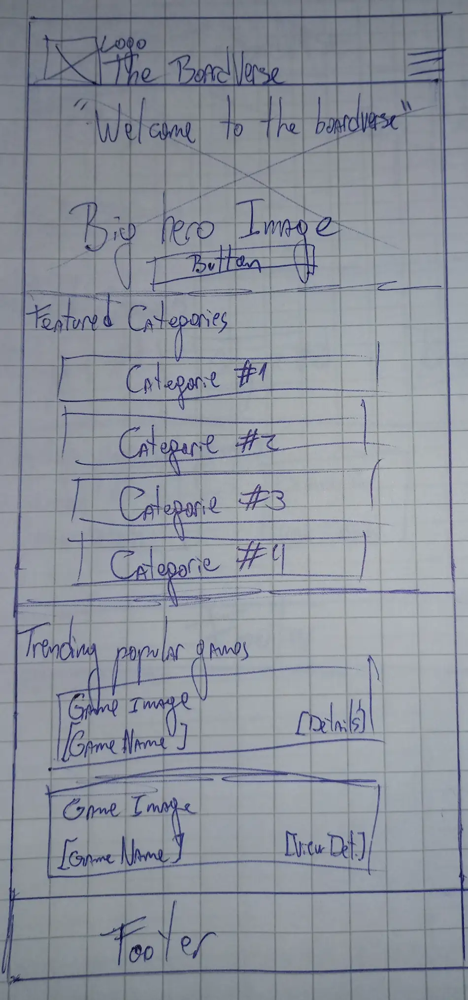
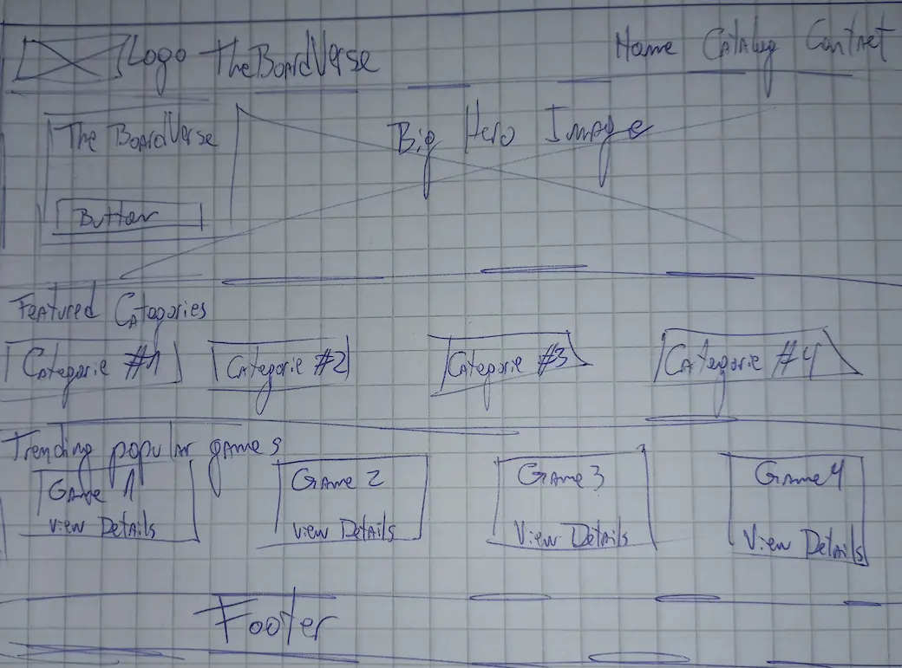

Site Name:
Name: The BoardVerse
I choose this name because it combines "Board games" and "Universe". It represents a massive, interactive space where players can filter, discover, and explore the universe of tabletop games based on their preferences.
Site purpose:
This website is designed to be a digital hub for the board gaming community. The main goal of this website is to simplify the process of choosing a board games for game nights. Through a clean and interactive interface, the site will showcase a curated selection of games, complete with high-quality images, descriptions, and dynamic details. It serves to connect players with the perfect game, whether they are looking for a quick party game or a deep strategy experience.
Scenarios:
- Scenario 1:What are the funniest fast-paced party games for a large group of friends?
- Scenario 2:What are the cheapest family board games?
- Scenario 3:Where can I find solo board games?
Color Scheme
To give the site a playful yet professional look, the following color palette was selected:
- Primary Color: Deep Blue (#1A2B4C) - Used for the header background, footer, and main headings to give a structured and reliable look.
- Secondary/Accent Color: Warm Orange (#FF6F3C) - Used for buttons, interactive links, and highlighting important elements like badges.
- Background Color: Off-White (#F8F9FA) - Used as the main body background to ensure optimal text readability.
Typography
The site uses the following web font family to ensure readability and modern styling:
- Heading Font: 'Roboto' (Bold, 700) - Applied to all headings (H1, H2, H3) to make title text clean and easy to read.
- Body Font: 'Roboto' (Regular, 400) - Applied to all paragraphs, lists, and general textual descriptions for clear readability.
Key Features & Layout Structure
The homepage will be structured into distinct sections to provide an optimal user experience:
- Hero Section: A welcoming banner with a clear Call to Action (CTA) button to explore the full catalog.
- Featured Categories: High-level filters (Party, Strategy, Family, Solo) to guide users based on their main interest.
- Popular Games Showcase: A curated grid featuring widely recognized games. Clicking on any game card will dynamically display a quick summary or redirect the user to its detailed view within the catalog.
Wireframes
The following wireframes show the layout blueprint for the homepage. The design focuses on introducing users to the world of modern board games and guiding them toward the interactive catalog.
Mobile View

Desktop View
